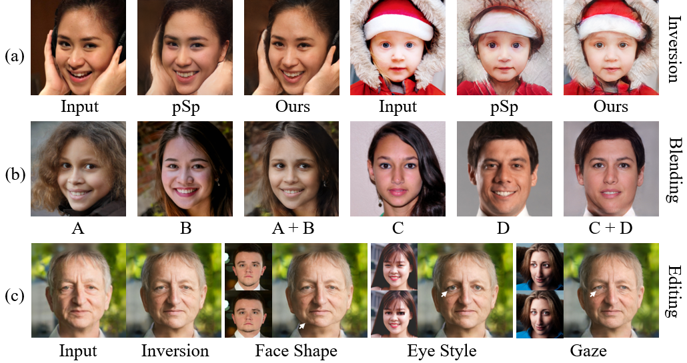

1 Tsinghua University
2 CUHK
3 HKUST
4 UCL
5 ByteDance Inc.
|  |
 |
@article{bai2022padinv,
title = {High-fidelity GAN Inversion with Padding Space},
author = {Bai, Qingyan and Xu, Yinghao and Zhu, Jiapeng and Xia, Weihao and Yang, Yujiu and Shen, Yujun},
article = {arXiv preprint arXiv:TODO},
year = {2022}
}

Comment: Proposes positional encoding is indispensable for generating images with high fidelity and zero-padding is not sufficient.